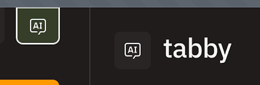

Tabsdata AI Agent (Tabby)
You can use the Tabsdata AI Agent (Tabby) to interact with the Tabsdata server. The agent can list collections, tables and functions. It can access table schemas and sample data, list executions, register functions, cancel executions, recover executions and trigger functions. It can also help create publishers, subscribers and transformers. There is a read-only mode to constrain the operations the agent can do when interacting with Tabsdata.
Usage
To interact with the agent, there is a new AI window in the UI (accessible in the top right corner). It will only be enabled if the agent is enabled too. To enable the agent store your OpenAI API Key in the environment variable before starting the Tabsdata server. For more details, see Environment Variables.
$ export OPENAI_API_KEY=<your_key>
{kind=link}

Configuration
The AI agent is only available if an OpenAI API key is provided, otherwise the Tabsdata instance will run without the AI Agent.
The agent runs on a specific port, which has to be configured. The Tabsdata API Server needs to know where this agent is, in order to use it. Therefore, we need to configure the following:
Agent configuration
Path: .tabsdata/instances/<instance>/workspace/config/proc/regular/aiagent/config/config.yaml
port: 2459
read_only: false
ai_providers:
openai:
api_key: ${env:OPENAI_API_KEY?}
The key is taken from the environment variable in this case. If not present, the agent doesn’t start.
Read-only mode allows to constrain the operations the agent can do when interacting with Tabsdata.
2459 is the port number that the agent is listening to.
API Server configuration
Additional configuration file path:
.tabsdata/instances/<instance>/workspace/config/proc/regular/apiserver/config/config.yaml
…
agent_addresses:
- 127.0.0.1:2459
…
The agent address above is the one that the API Server is using to interact with the agent. Note that both ports (the one the agent is listening to and the one the API server can use to interact with the agent) must be the same one.
For now, only OpenAI’s gpt-4 is the supported model, and the one that the agent will use.